Note : 3.5/5
Une montée en tension irréversible. Fisk en maire autoritaire, Bullseye déchaîné, Vanessa morte, Matt en prison : cette saison prend des risques et les assume jusqu'au bout, portée par une écriture qui n'hésite pas à briser ses propres piliers pour aller de l'avant.
⚠️ Attention : cette critique contient des spoilers majeurs sur Daredevil: Born Again Saison 2
Un New York sous oppression
Dès les premiers épisodes, la saison 2 installe une atmosphère pesante et cohérente : Wilson Fisk règne sur New York en tant que maire, et sa force spéciale anti-justiciers quadrille les rues avec une brutalité assumée. N'importe qui peut devenir suspect, arrêté, enfermé, pour n'importe quelle raison. La ville n'est plus protégée. Elle est sous contrôle. Et c'est dur à regarder, parce que c'est volontairement étouffant, chaque plan de rue, chaque interaction entre un civil et un agent de Fisk rappelle que quelque chose s'est brisé dans cette ville.
Les deux premiers épisodes souffrent malgré tout d'un défaut évident : ils fonctionnent davantage comme des récapitulatifs que comme de véritables épisodes. On apprend que Fisk prépare un combat de boxe et que Vanessa tisse des relations gouvernementales en coulisses, mais l'ensemble tourne en rond. Un "précédemment" bien construit aurait suffi. Ce n'est pas rédhibitoire, mais ça ralentit inutilement une saison qui n'a pas besoin de ça pour démarrer.
La série se redresse rapidement avec une séquence de combat dans une prison clandestine pour justiciers, construite par Fisk dans un sous-sol de la ville. On y retrouve Swordsman (Tony Dalton), jugé coupable de meurtre et de vigilantisme alors que nous, spectateurs, savons que c'est faux. La musique, sombre et rythmée, suit parfaitement l'action. C'est du Daredevil dans ce qu'il a de plus pur : un héros seul, dans le noir, face à un système truqué.
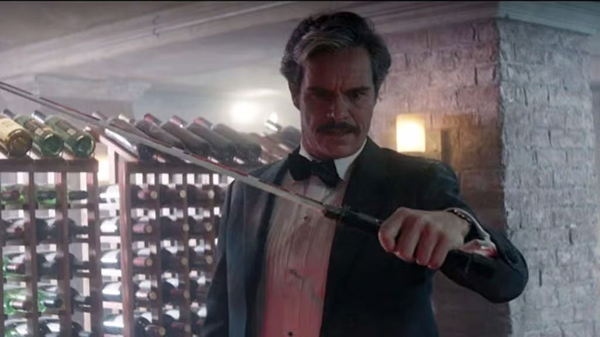
C'est aussi en première partie de saison qu'on découvre White Tiger, héritière d'une amulette de son père. Son potentiel est immense pour la suite du MCU. Elle s'intègrerait parfaitement dans une future équipe de justiciers, et j'espère sincèrement que Secret Wars ne viendra pas tout effacer avant qu'on ait pu la voir évoluer vraiment. Pour l'instant elle pose ses bases, et c'est suffisant pour donner envie.
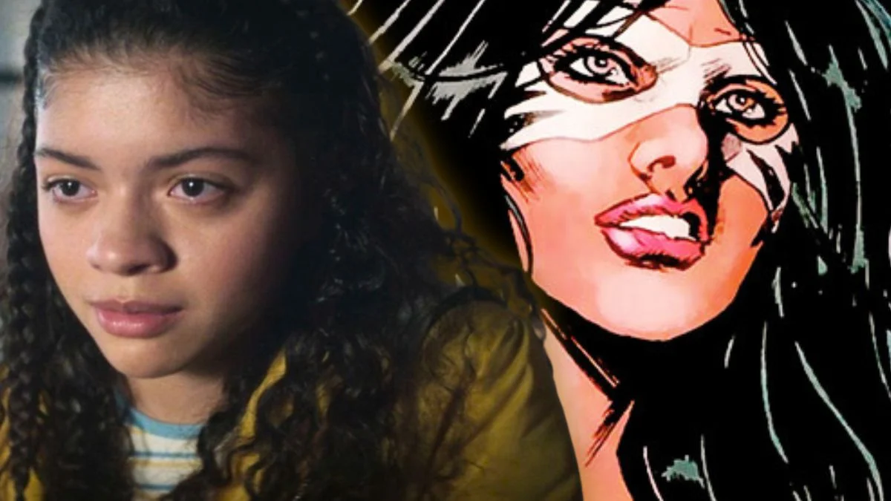
Bullseye, Vanessa, et le point de rupture
La scène centrale de toute la saison arrive en milieu de parcours, et elle est construite avec une précision remarquable. Ça commence avec Bullseye : on le suit dans son quotidien redevenu presque normal, il aide ses voisins, il sourit. Quelque chose cloche. Cinq minutes plus tard, dans un bar, il massacre une escouade entière de la force spéciale de Fisk après avoir prétendu que le Punisher s'y cachait. La scène est d'une violence totale, précise, complètement fidèle au personnage. C'est Bullseye, rien que Bullseye, et c'est exactement ce qu'on attendait de lui.
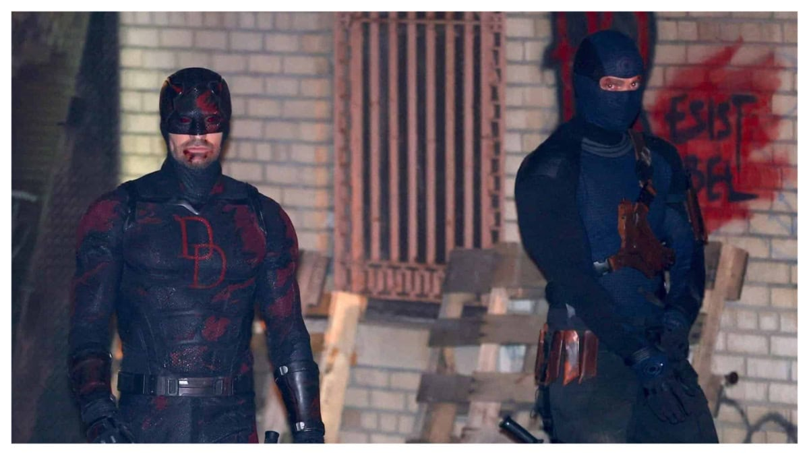
Puis vient le combat de boxe de Fisk. Il domine son adversaire, le met en sang, est à deux doigts de le tuer devant tout le monde. Vanessa arrive par surprise, elle n'était pas censée être là. Et au moment où le match se termine, Bullseye surgit, élimine les forces spéciales et cherche Vanessa. Rappelons-le : Vanessa l'avait engagé et manipulé pour tuer Foggy (voir ma critique des premiers épisodes de la saison 1 : Avis sur Daredevil: Born Again – Épisodes 1 et 2). Dans le chaos, il envoie une boule décorative à l'effigie de Fisk qui se brise et s'enfonce dans le crâne de Vanessa. Daredevil arrive. Trop tard. Vanessa est morte.
C'est brutal, nécessaire, et ça change tout. Sans elle, Fisk n'a plus rien à perdre, plus rien à protéger, plus aucune raison de se retenir. Sa chute en tant que maire devient inévitable, et ça fait directement écho aux événements de Spider-Man: Brand New Day, où la remise des clés de la ville à Spider-Man aurait été impensable si Fisk avait encore le contrôle de lui-même.
Ce qui suit immédiatement tient toutes ses promesses. Pendant presque un épisode entier, le suspense reste ouvert : Vanessa va-t-elle survivre ? Les flashbacks sur Fisk et Vanessa, sur Foggy et Matt Murdock, fonctionnent vraiment. Ce n'est pas du fan-service gratuit, ça ancre la chute émotionnelle dans quelque chose de concret, de vécu. Revoir ces relations issues de la série Netflix, ça rappelle immédiatement ce qui est en train de se briser. Le retour de Wesley en flashback, son ancien second, dit la même chose autrement : le masque est tombé. Le Fisk d'avant est de retour, et cette fois il n'y a plus personne pour le freiner.
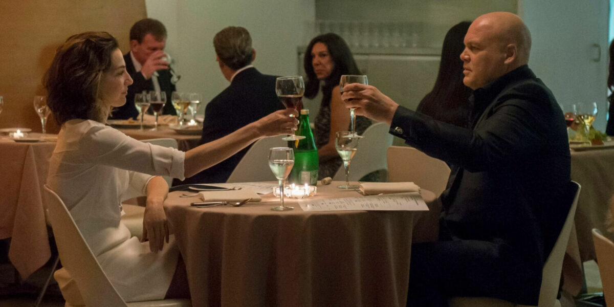
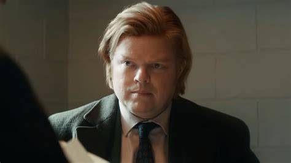
Fisk sans masque, New York qui se délite
L'une des images les plus fortes de la saison arrive peu après la mort de Vanessa : Fisk tue le médecin sans un mot, puis dit au revoir à sa femme dans une église où il est le seul habillé en blanc parmi tous ces noirs. Trente secondes, et tout est dit. Ce n'est plus un maire. Ce n'est même plus un homme en deuil. C'est un prédateur qui a décidé d'arrêter de faire semblant.
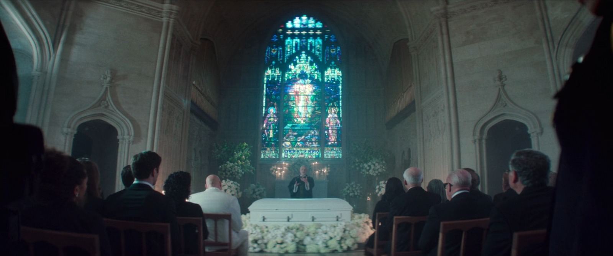
La densité narrative de cette partie de saison est impressionnante. Les arcs de Daredevil et Fisk d'un côté, ceux de Buck, Daniel et BB de l'autre, tout avance en parallèle sans se marcher dessus. New York court à sa perte. Les forces spéciales, sous la direction de Buck, débordent de leur mandat et s'en prennent aux civils pendant les manifestations devant la mairie. Karen se retrouve au mauvais endroit au mauvais moment et finit en prison, ce qui lui redonne enfin un vrai poids narratif, elle qui était trop en retrait depuis le début de la saison. Bullseye s'en sort mais se retrouve coincé chez elle, créant une tension particulièrement bien exploitée.
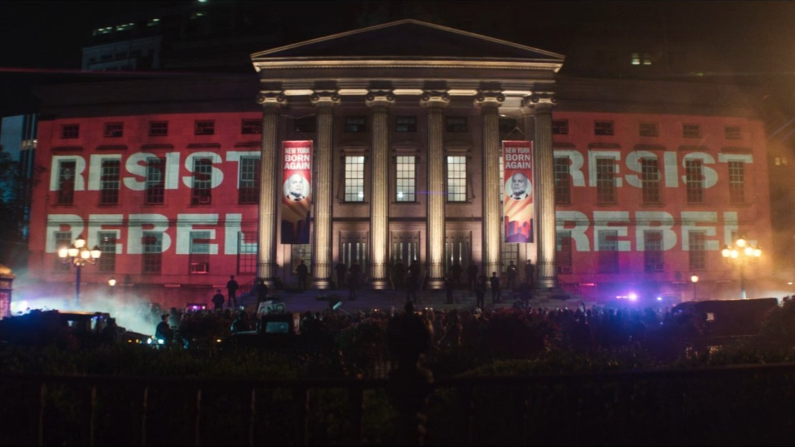
La confrontation entre Fisk et Daredevil dans cette période est, sans exagérer, de l'art. Deux hommes épuisés de voir leurs proches mourir, qui tentent de trouver une sortie ensemble. Puis Fisk pète les plombs. Daredevil gagne, mais ne sait pas quoi faire de cette victoire. Dans le regard de Matt, on sent quelque chose se préparer, pas une mort, mais un sacrifice. Il va peut-être partir. Quitter New York. Enlever le costume. Les compositions musicales servent parfaitement ces moments : chaque apparition de Fisk est portée par un thème qui installe immédiatement sa puissance, et ça se ressent dans chaque scène.
Un bémol notable sur cette partie de saison : Jessica Jones. Son apparition était attendue, et elle se résume à déposer une info à Daredevil et signaler qu'elle a été attaquée chez elle. Elle arrive, elle repart. L'intention est lisible, montrer que Fisk frappe tous les justiciers de New York et les glisser dans le MCU sans trop d'effort, mais ça reste du caméo. Pour un personnage de cette envergure, c'est une déception franche. La série aurait pu lui offrir au moins une scène supplémentaire pour justifier son retour, d'autant plus que Marvel nous avait eux-mêmes spoilé son arrivée avant même la diffusion.
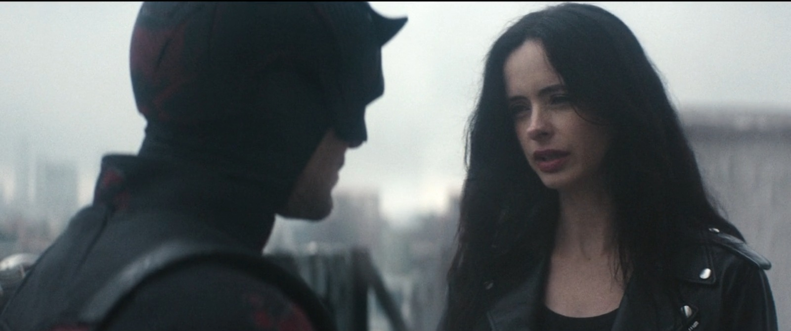
En parallèle, Heather devient de plus en plus intéressante au fil des épisodes. Sa descente progressive était annoncée par les leaks depuis quelques semaines, elle allait devenir la prochaine Muse, le personnage psychopathe introduit en saison 1. Tout au long de cette partie de saison, les signes s'accumulent avec une vraie cohérence, et la série les distille sans jamais trop en faire.

Le tribunal, le sacrifice, la chute
Le final est le meilleur épisode de la saison, et l'un des plus solides que le MCU ait produits depuis longtemps. Il joue sur la tension, la colère et les surprises, et il a le mérite de traiter ses enjeux avec une vraie ambition, sans esquiver ce qu'il a semé.
Le tribunal, mis de côté dans les épisodes précédents, devient ici le centre de tout. Matt demande à Fisk de venir témoigner, d'avouer devant le monde entier que Daredevil, c'est lui. Incriminer Fisk pour tous ses actes, au prix de détruire sa propre vie secrète. C'est l'une des scènes les plus puissantes de toute la série : elle pousse vraiment la question de ce que ça signifie d'être un héros, du sens du sacrifice, de ce qu'on est prêt à détruire pour que justice soit rendue. En dévoilant ton identité, tu détruis ta vie. Et c'est exactement ce que Matt fait, sans hésiter, sans chercher d'autre issue. Ce choix le mène directement en prison, et la série n'essaie pas d'en atténuer le poids.
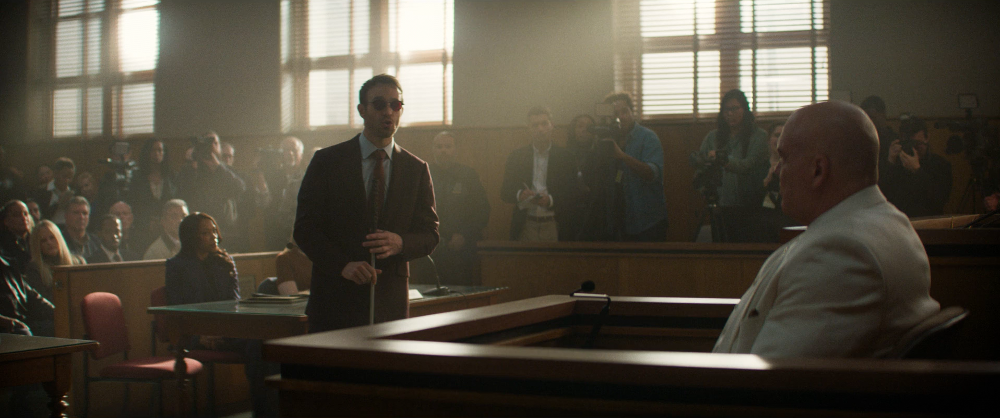
Fisk, lui, est exactement le personnage qu'on attendait depuis la mort de Vanessa. Des discours emblématiques, des mots forts, une vraie envie de réconciliation avec la ville qu'il aime sincèrement. Mais la ville n'en peut plus. Elle le rejette. Et dans une rage incontrôlable, Fisk tue une vingtaine de civils. C'était fascinant, c'était violent, et c'est exactement ce que la mort de Vanessa annonçait depuis le milieu de saison. Ce Fisk-là n'a plus rien à perdre, et ça se voit dans chaque geste, dans chaque mot.
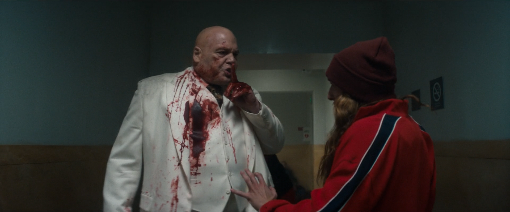
Jessica Jones sert finalement à quelque chose dans ces dernières minutes, en apportant une aide concrète à Daredevil, mais l'impression d'ensemble reste la même : son arc était du gâchis. Marvel nous avait spoilé son retour en amont, ce qui a encore amplifié la déception. Sur ce point, difficile d'être indulgent. Les autres caméos fonctionnent mieux : le patron du bulletin des anciennes saisons, Luke Cage, c'est plaisant et ça ouvre des perspectives concrètes. Luke et Jessica qui reprennent les affaires ensemble, ça sent la configuration pour aider Matt depuis sa cellule. Un beau clin d'œil, même si l'acteur de Luke Cage a jugé utile de nous spoiler la chose sur Instagram avant même que l'épisode sorte.
La conclusion visuelle est forte : Fisk s'exile, Matt entre en prison. On ne sait pas vraiment qui a le plus gagné, mais on sait que les deux ont tout perdu. La ville a fait son choix, mais l'assumera-t-elle vraiment ? C'est une image juste, et la série a le courage de ne pas y ajouter une victoire factice pour rassurer le spectateur.
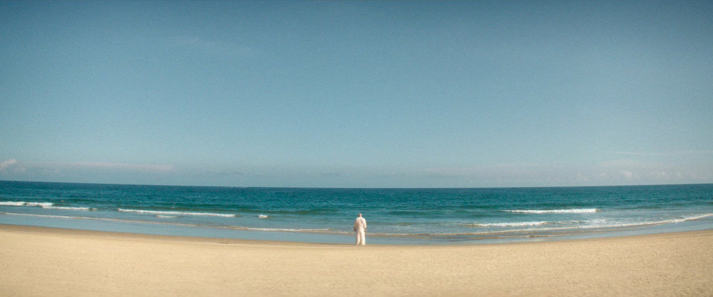
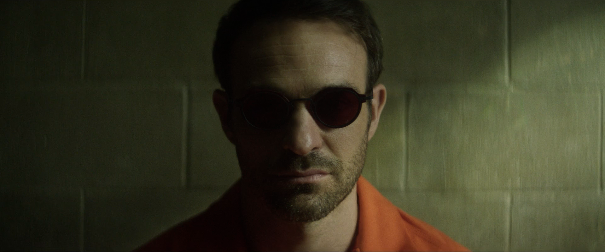
Bullseye et Charles qui partent ensemble, direction inconnue, c'est la seule vraie zone d'ombre du final. L'intrigue m'intéresse, mais le risque de le voir réapparaître dans deux saisons avec un contexte mal expliqué est réel. La série devra gérer ça avec soin pour ne pas gâcher l'un des personnages les mieux écrits de la saison.
Et puis il y a Heather. Sa transformation en Muse est traitée avec une cohérence remarquable, les leaks avaient raison, et la série avait bien semé les graines de cette bascule depuis le début. Elle a maintenant toutes les raisons personnelles de haïr Matt Murdock. Ce n'est plus un personnage en marge : c'est une vraie menace pour la saison 3, construite sur des fondations solides.
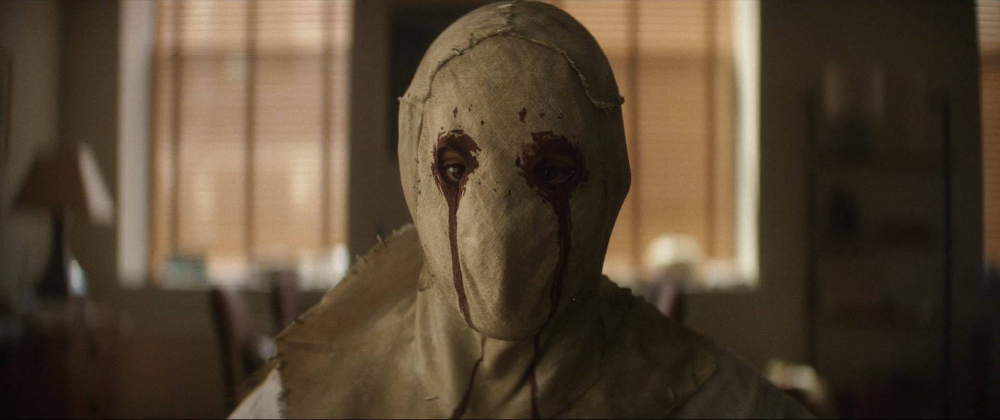
Je ne vois vraiment pas Daredevil ne pas être mis dans Spider-Man: Brand New Day, ce serait du gâchis de ne pas le mettre… DONC Marvel, FAITES UN TRUC AVEC Daredevil ET Spider-Man.

Bilan
Cette saison 2 est plus solide que ce à quoi on pouvait s'attendre. Elle prend des risques réels, la mort de Vanessa, la chute progressive de Fisk, Karen en prison, Matt qui se retrouve derrière les barreaux à son tour, la menace Heather, et elle les assume sans reculer ni les recycler en demi-mesure. La dynamique Fisk / Daredevil atteint ici des sommets que la saison 1 n'avait pas complètement touchés, et Vincent D'Onofrio livre une performance qui porte la saison entière sur ses épaules avec une intensité qui ne faiblit jamais.
Les défauts existent et méritent d'être nommés : un démarrage qui tourne en rond, Jessica Jones réduite à l'état de caméo alors qu'elle aurait mérité un vrai arc, et Bullseye dont l'avenir reste trop flou pour être pleinement satisfaisant. Mais la direction est claire, le ton est assumé, et le final tient toutes ses promesses. C'est rare dans le MCU actuel, et ça mérite d'être salué.